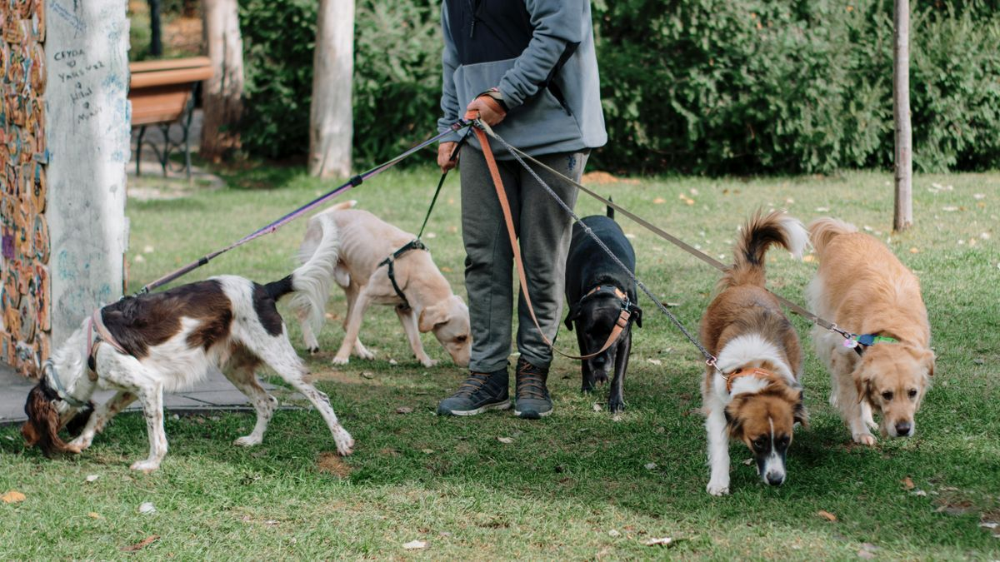

언제 점검할까
현관 매트 위, 닦기 전 30초 눈으로 확인합니다. 비·눈·염도 도로 이후는 3분으로 늘립니다. 장마·진흙이 심한 날은 발만이 아니라 배·다리까지 젖으면 부분 세척 7분으로 늘리는 편이 낫습니다. 실내 들어오기 전에 끝내는 습관이 바닥 오염을 70% 줄입니다.

점검 순서
- 발바닥 패드 사이 모래·눈·진흙
- 발톱 끝 1mm·갈라짐
- 다리·배 사이 털 엉킴·젖음
- 절뚝임·과도한 핥음
미지근한 물+타월, 완전 건조 2분. 향 강한 물클리너는 피부 자극을 키웁니다.
발가락 사이 이물질은 물티슈로 눌러 닦기보다 흐르는 미지근한 물로 씻어내는 편이 자극이 적습니다. 건조를 건너뛰면 습진이 생기기 쉽습니다.
배·엉덩이까지 젖었거나 냄새가 날 때는 발 2분 뒤 부분 세척을 7분으로 확장하세요. 순서는 부분 세척 글의 발→배→건조와 같게 맞추면 가족이 번갈아 해도 빠뜨리기 어렵습니다.
계절별 추가
겨울: 발바닥 크림 주 2회, 소금 제거는 물만. 염도 도로 이후 발 닦기 3분+건조.
봄: 꽃가루·풀 씨앗 3cm 이하 제거, 발가락 사이 30초 확인.
여름: 아스팔트 5초 손등 테스트 후 산책 시간 조절(날씨 산책 조절 글). 뜨거운 보도 후 발 세척·건조를 늘리세요.
장마: 비·진흙 날은 평소 2분→7분 부분 세척(발→배→건조). 전신 목욕 대신 부분 세척 루틴을 쓰고, 습도·귀·침구까지 보려면 장마철 위생 글을 함께 보세요.

계절이 바뀌어도 원칙은 같습니다. 닦기와 건조를 한 세트로 묶고, 젖은 채로 실내에 들이지 않습니다.
산책을 줄인 장마 주간에도 발 관리는 유지하세요. 실내 놀이만 하고 발을 안 보면, 습기·냄새가 실내 바닥·침구로 옮겨가는 경우가 있습니다. 실내 전환 기준은 weather-walk-adjustments 글을 참고하세요.
발 만지기 거부할 때
소파에 앉은 채 발톱 1개만 2초 터치한 뒤 간식 1개를 주는 방식으로 7일간 진행합니다. 7일째까지 거부하면 발 닦기 대신 물티슈로 발바닥만 1초 접촉하는 단계로 더 쪼갭니다. 억지로 5분 잡으면 다음 산책부터 현관 앞에서 멈추는 경우가 있어, 짧게 자주가 원칙입니다.
장마처럼 세척 시간을 늘려야 하는 주에도, 첫날부터 7분을 요구하지 않습니다. 2분 성공을 3일 쌓은 뒤 배·엉덩이 1분을 추가하는 순서가 거부를 줄이는 경우가 많습니다.

실전 적용 노트
산책 후 발 관리는 30초×하루 2회면 충분한 출발점입니다. 물티슈·미지근한 물·수건 중 하나만 고정해 쓰세요.

발가락 사이·패드 균열·이물질을 순서대로 확인합니다. 작은 자갈이 남으면 다음 날 절뚝임으로 이어질 수 있습니다.
겨울 염화칼슘·여름 뜨거운 보도블록·장마 진흙 날은 세척 빈도를 늘리세요. 세척 후 반드시 말립니다. 비 맞은 날 전신 목욕을 미루더라도, 부분 세척 7분은 빠뜨리지 않는 편이 낫습니다.
발 털이 길면 미끄럼·이물질 끼임이 늘어, 계절별로 짧게 정리하는 집이 많습니다.
발바닥 크림은 수의사 권장 시에만 사용합니다. 임의로 사람 로션을 바르면 핥아 삼킬 수 있습니다.
발 닦기를 싫어하면 산책 직후 간식 1개와 연결하되, 점차 간식 없이도 가능하도록 줄여 가세요.
상처·종양·발적이 3일 지속되면 사진과 함께 검진을 검토하세요. 노견은 누워서 발을 닦는 편이 안정적인 경우가 많습니다.
이번 주 발 관리 체크리스트입니다. 항목 3개만 골라 쓰세요.
- 산책 후 발가락 사이·패드를 30초 이상 확인했습니다.
- 비·진흙 날 7분 부분 세척+건조를 썼습니다.
- 겨울 염화칼슘·여름 뜨거운 보도 후 세척을 늘렸습니다.
- 세척 후 수건으로 반드시 말렸습니다.
- 이물질·균열·발적을 3일 이상 메모했습니다.
- 사람 로션·임의 크림은 바르지 않았습니다.
- 싫어할 때 간식 연결 후 점차 줄이는 중입니다.
- 장마 주간 귀·배 건조를 함께 확인했습니다.
발 관리는 미용이 아니라, 절뚝임·피부염으로 이어지기 전에 하는 짧은 예방입니다. 이번 주 목표는 '매일 완벽'이 아니라 체크리스트 3개×2주입니다.
월: 현관 닦기 키트 위치를 고정합니다. 화~목: 평소 2분 루틴을 유지합니다. 금: 비·진흙 날이 있었는지 돌아보고, 있었다면 7분 부분 세척을 한 번 실행합니다. 토: 발가락 사이 냄새·붉은기를 30초 확인합니다. 일: 다음 주 산책이 많은 날에 키트를 미리 채워 둡니다.
가족이 번갈아 산책하면 카톡에 '오늘 2분/7분'만 남겨도 누락이 줄어듭니다. 안 된 날은 원인 한 줄만 적고 다음 주에 조정하세요. 발 사진은 같은 각도로 찍어 두면 상담 때 설명이 쉬워집니다.
정리하며
매일 샤워보다 현관 2분이 현실입니다. 비 오는 날도 발 닦기를 건너뛰기보다 7분 부분 세척이 낫습니다.
현관에 닦기 키트 3종만 고정해 두세요. 매번 찾는 1분이 사라지면 2분 점검이 습관이 됩니다.
전신 목욕이 부담이면 부분 세척부터 시작하세요. 발·배만이라도 닦고 말리면, 실내 냄새와 습진 예방에 도움이 되는 경우가 많습니다.
초보자가 자주 실수하는 포인트
- 이물질 방치해 침대 오염
- 발 닦기 10분 억지
- 비 온 날 전신 목욕만 미루고 부분도 생략
- 향 강한 사람용 세정제
- 닦은 뒤 건조 없이 실내 방치
체크리스트
- 현관 닦기 키트 고정
- 평소 2분·오염 날 7분
- 닦은 뒤 3분 건조
- 발톱 2주 1mm 절단
- 이상 시 메모
자주 묻는 질문
- 매 산책마다 발을 씻겨야 하나요?
- 염도·눈·진흙 심한 날만 3~7분 세척, 평소는 타월 닦기 2분이면 충분합니다. 비 맞은 날은 발·배 건조를 우선하세요.
- 전신 목욕 대신 발 닦기만 해도 되나요?
- 대부분의 날은 부분 세척으로 충분한 경우가 많습니다. 진흙·냄새·비 노출 날은 발·배 7분+건조를, 전신 목욕은 4~8주 주기로 맞추는 편이 낫습니다. 장마철에는 귀·습도까지 보려면 rainy-season-hygiene 글도 함께 보세요. 자세한 순서는 bath-and-wipe-routine 글을 참고하세요.
- 발 만지기를 싫어하면 어떻게 하나요?
- 발톱 1개 2초 터치+간식을 7일 반복하세요. 억지로 길게 하면 다음 산책부터 거부가 늘 수 있습니다.
- 발바닥 크림은 꼭 발라야 하나요?
- 겨울 건조·갈라짐이 있을 때 주 2회가 기준입니다. 핥음이 심하면 소량·무향 제품을 쓰고 관찰하세요.
이 글은 초보자 기준으로 이해하기 쉽게 정리되었으며, 내용은 운영 과정에서 순차적으로 보완될 수 있습니다. 수의사 등 전문가의 진단·처치를 대체하지 않습니다.